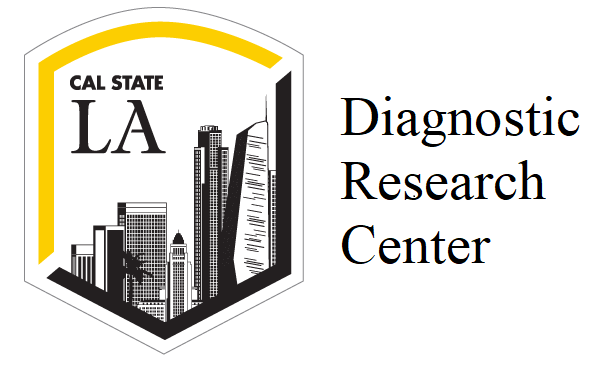

Hi, my name is Rajat Khemka. I am a full stack
software engineer currently working with Alzheimer's Therapeutic
Research Institute as Programmer Analyst-II. I can work with
different technologies such as Android, Haskell, Machine Learning
and Web Programming. I can develop cross browser compatible web
and mobile applications. "Here are some of my projects."

Diagnostic Research Center
Diagnostic Resource Center, is a part of division of special
education and counselling.
This is a departmental library consisting of
assessments and protocols related to special education and
counselling.
This assessment are used by student during their
courses of Special Education and counselling which are issued to students on weekly rentals.
For this project I built a filly functional web based inventory management system using Spring MVC
which efficiently manages more than 500 students records per semester.
My project is currently hosted on university server.
Restaurant Finder is a web application which uses
Zomato API to fetch JSON response.
It helps user to search a restaurant based on the restaurant's name, cusine and
location.
User
interacts with frontend (developed using HTML + CSS + Bootstrap +
Vue.js) which forwards user request to backend (developed using
Node.js + Express.js) responsible for calling zomato api and
filtering reponse as per user specified query.
The NCAA Division I Men's Basketball Tournament (known informally
as March Madness) is a single-elimination tournament played each
spring in the United States.
This was a machine learning project which is hosted on kaggle every year
to predict winner for the upcoming tournament based on historical dataset.
In this project the accuracy of model is tested by predicting probabilities
for every possible matchup in the past 4 NCAA tournaments (2014-2017).
The goal of the competition is to build and test the models based
on past data, call out the probabilities and predict the result.
This projects evaluation is based on the Minimum Log Loss
and the accuracy score obtained by different Classifiers
applied
Business Exchange represents an idea of project based on business
professional interaction with client.
The idea is to built a system
through which business professional can manage their appointment on
their mobile devices,while it is also beneficial for clients as it
saves their time of interaction which involves visiting the professionals,
scheduling appointment, as everything can be done through
application.
Business professionals considered for this project are
charted accountant, doctors, plumbers and mechanics.
The idea is implemented using android.
I published a technical paper at IC-CSOD for this project, the paper is
available on Page 384-388